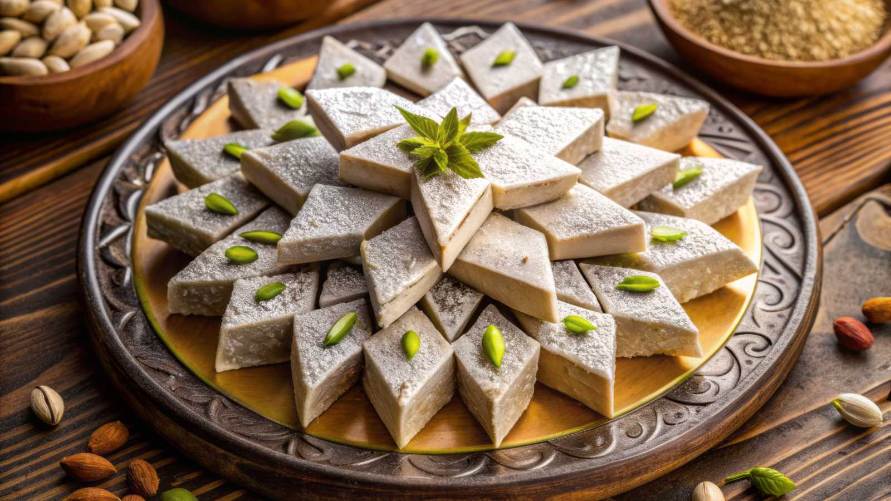
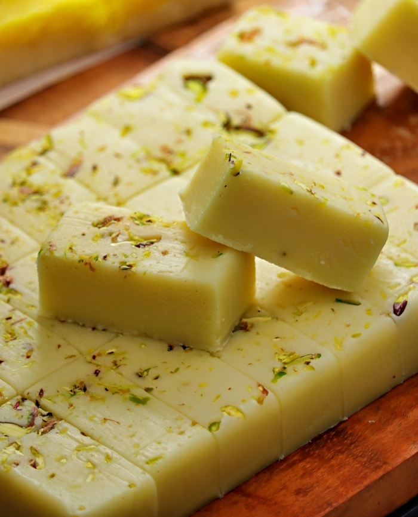

KajuKatli
Ingredients
- Cashews
- Sugar
- water
- Ghee
- Cardamom Powder
Process
- Powder Cashews: Blend dry cashews into a fine powder without releasing oil.
- Make Sugar Syrup: Heat sugar and water until one-string consistency forms.
- Mix Cashew Powder: Stir in cashew powder with syrup until thick and non-sticky.
- Knead Dough: Knead the warm mixture into a smooth dough with greased hands.
- Roll Dough: Roll dough thinly between parchment sheets and Slice rolled dough into diamond shapes.
- Set and Store: Let pieces set, then store in an airtight container and Enjoy!!!

Burfi
Ingredients
- Milk Powder
- Sugar
- Milk
- Ghee
- Cardamom Powder
- Chopped Nuts
Process
- Melt Ghee: Heat ghee in a pan.
- Mix Milk & Sugar: Add milk and sugar, stir until dissolved.
- Add Milk Powder: Stir in milk powder to make a lump-free mix.
- Cook: Cook until thick and non-sticky.
- Flavor: Add cardamom powder.
- Set: Transfer to a greased tray and flatten.
- Garnish: Add nuts and press lightly.
- Cut & Serve: Cool, cut into pieces, and enjoy!!!
